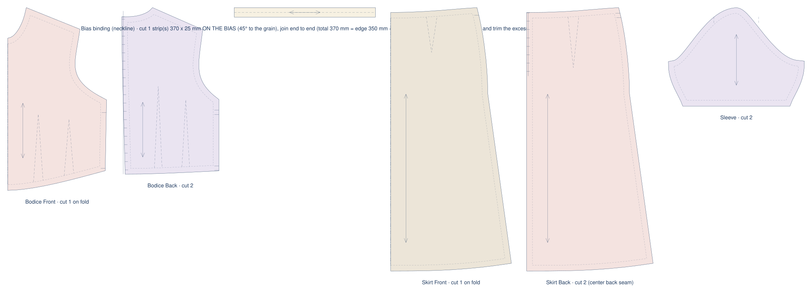
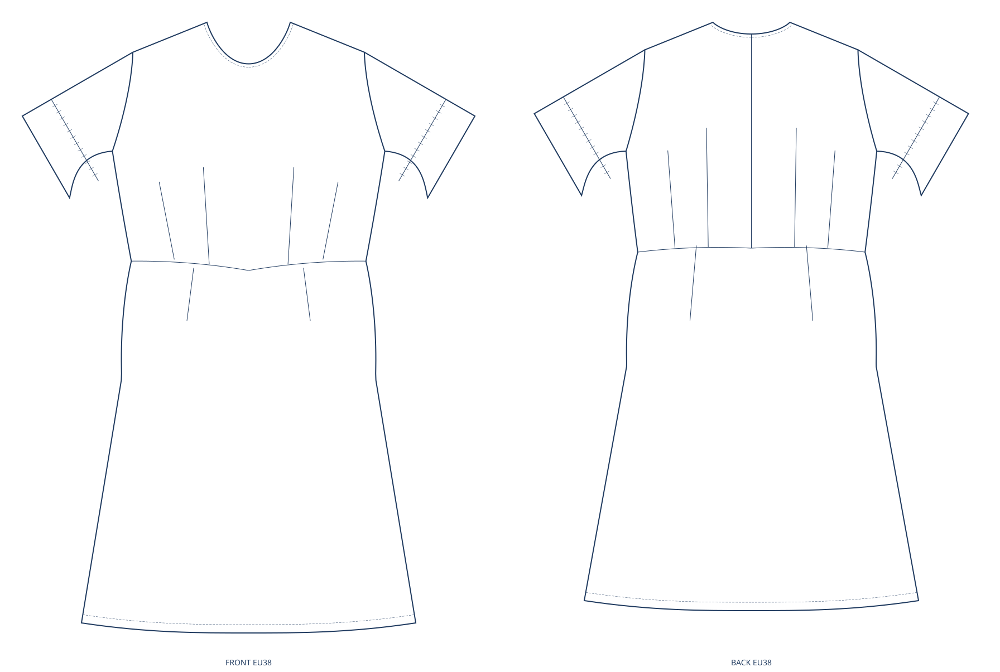
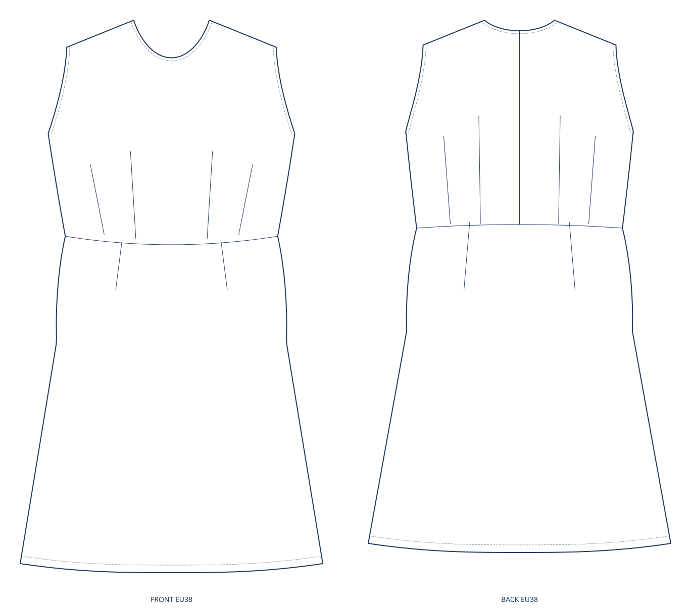
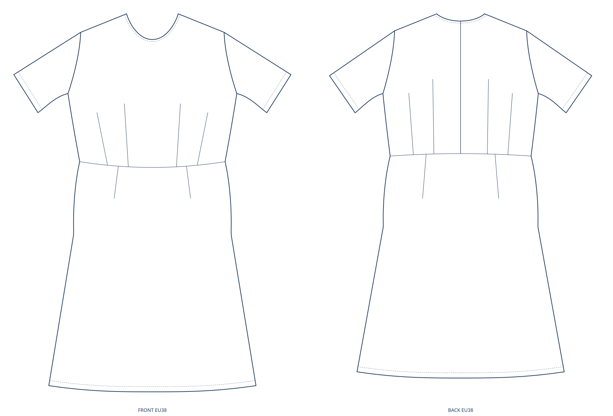
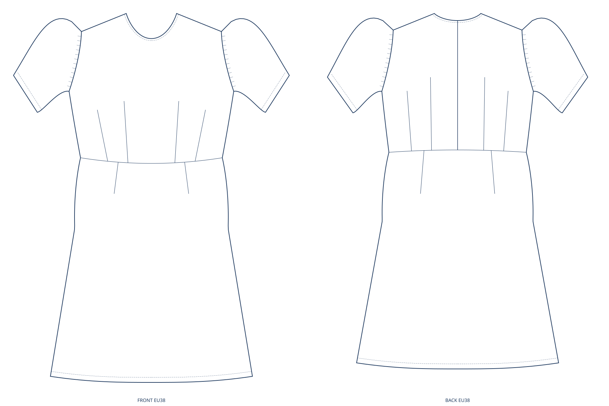
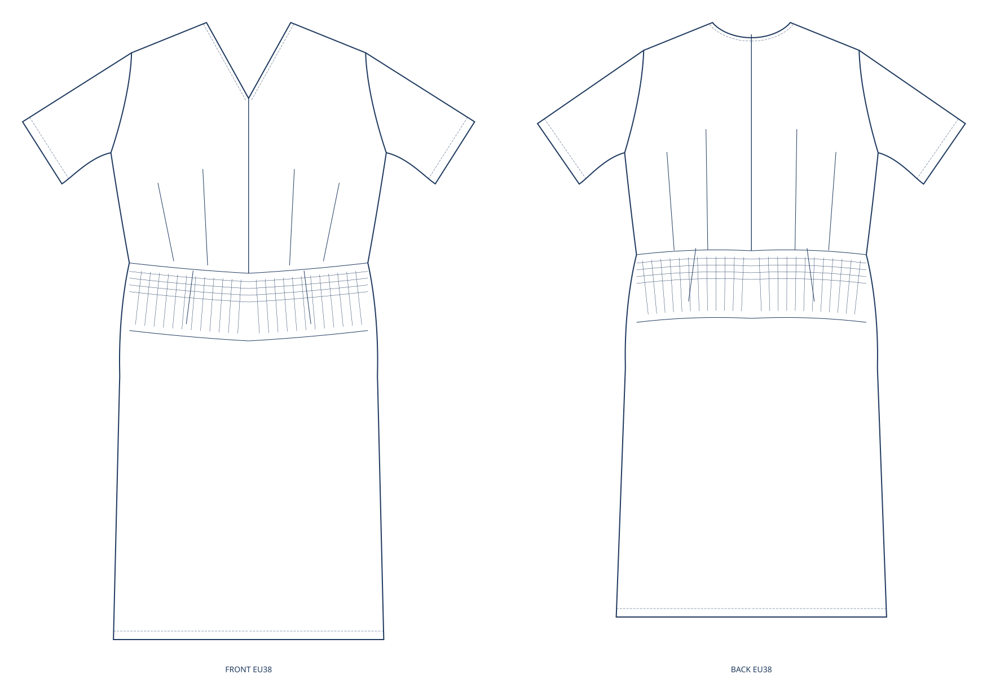
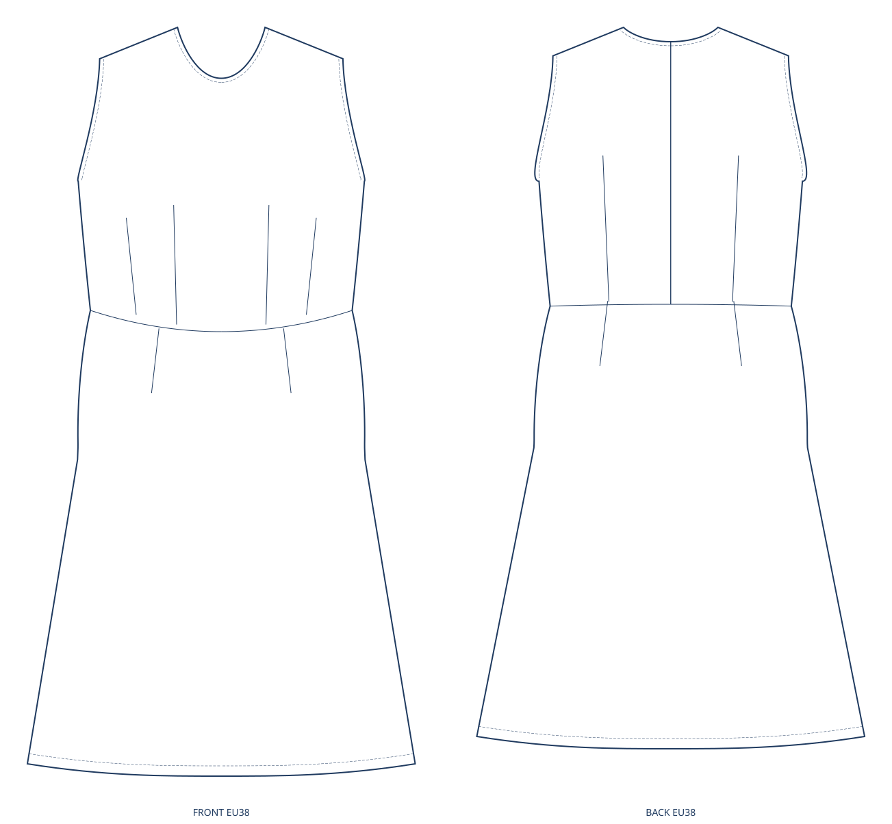
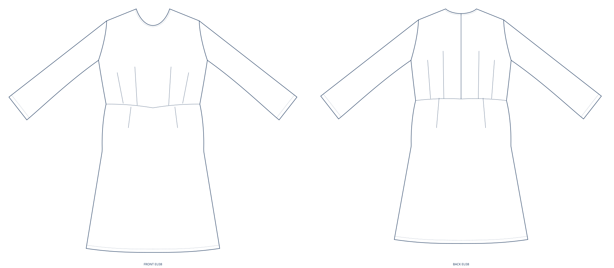
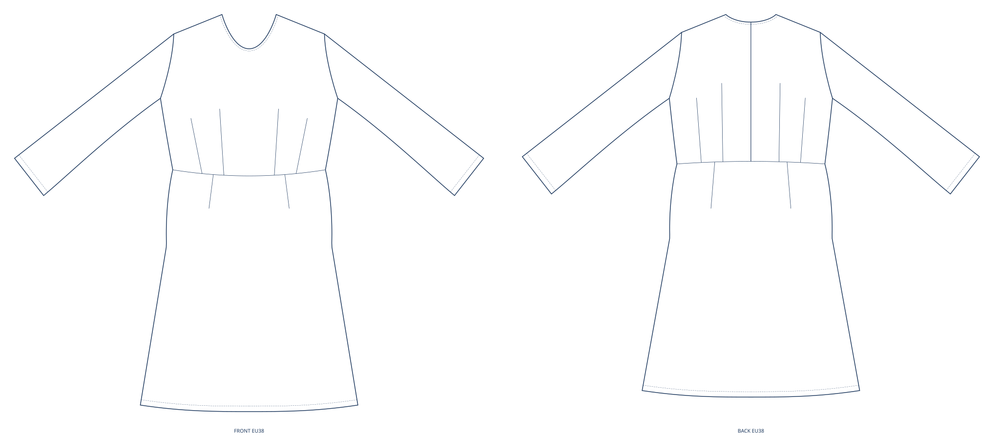

A photo goes in. A pattern, a flat and a sewing guide come out.
stitchu is a deterministic pattern engine. Hand it a photo, or build the recipe yourself from the garment vocabulary, and one C++ kernel draws all three from the same spec, in your browser. A word the engine cannot draw is refused by name, never quietly swapped for something close.
what is it?A deterministic pattern engine. You give it a garment: upload a photo, type a prompt, or pick the garment, neckline, sleeve and skirt from the vocabulary the engine actually knows. It answers with the pattern pieces, the fashion flat and the sewing guide. Not a filter, not a template.
under the hood?A hand-built C++ kernel is the single source of every number: geometry, seam equalisation, notches, grainlines. The photo reader is the only part that uses a model, and it only ever writes into a locked vocabulary, a word the engine cannot draw is refused by name, never quietly swapped for something close.
which sizes?The draft is cut to seven measurements you type once, they are saved in your browser and never uploaded, or to the demo body if you skip that step. For sellers, one design grades across the eight sizes the contract publishes a shape for, EU34 to EU48; a size the kernel refuses comes back by name with its reason.
where does the photo go?The pattern math runs inside your browser. The photo is the one thing that leaves the page: it is sent to the stitchu server and forwarded to the Anthropic API, which reads it into garment words; it is not stored. The upload screen and the privacy page say the same sentence.
01a photo, a prompt, or a recipe you pick word by word
02pick the fabric, a knit and a woven give two different drafts
03download the pattern, the flat and the sewing guide, all from that one spec
What is this, in one sentence?
stitchu turns a photograph or a written recipe into a garment pattern you can actually cut and sew, plus the fashion flat that sells it and the sewing guide that builds it, and it draws all three from one spec with a deterministic engine rather than a picture model.
Why a deterministic engine, and not a picture model?
A picture model draws something that looks like a garment. This draws something that measures like one. Every seam has a length in millimetres, and the two sides of a seam are compared against each other rather than eyeballed; a pattern that does not pass the engine's own sewability checks does not come back as a pattern, it comes back as a named refusal.
the same run drafts, checks and draws · no per-call model cost on the geometry
Ask it twice, get the same pattern twice.
The same spec and the same body give the same bytes, every run, on every machine. That is not a slogan on this page: the shop-window gate re-runs the generator that made these drawings and fails if a single byte drifted. A pattern you cannot reproduce is a pattern you cannot grade, cannot re-cut and cannot sell twice.
gate: engine/tests/vitrin_gercek_check.mjs · re-runs gen-landing-motor.mjs and diffs the bytes
Who is it for?
Two kinds of people, and they want two different things out of the same draft. A maker wants the pattern and the guide, prints it true-scale and sews it. A seller wants the flat and the graded size run, because that is what a listing, a tech pack and a factory conversation are made of. One spec answers both, so the flat on the listing cannot drift away from the pattern in the box.
no price on this site yet: nothing gets a price before a toile is sewn and judged
One spec. Three outputs.
The pattern pieces you cut, the fashion flat that says what the garment looks like, and the sewing guide that says what order to build it in. Every drawing below came out of the kernel at build time; none of it is illustration.
01 · the pattern · drawn by the kernel at build time

5cut pieces for a straight-sleeve a-line dress at EU38, and2metres of fabric at the standard roll width, from the engine's own layout. The create page downloads this exact byte path (PDF, SVG, DXF).
source: engine/tools/gen-landing-motor.mjs · re-run and diffed by vitrin_gercek_check02 · the flat · projected off the drafted pattern itself
Front and back, assembled from the drafted pattern's own panels, the armhole, the cap, the darts and the collar in the drawing are the same millimetre geometry you cut. One spec moves one object: the pattern and the flat cannot disagree, because the flat is the pattern, projected.
drawn by web/lib/flat-from-pattern.js, the same file the flat download button runs03 · the sewing guide · the order it comes together
14construction steps ride on this dress, in build order, written by the engine into the same draft the pattern comes from. The downloadable guide is assembled from those steps plus the fabric catalog's sourced settings, a fabric with no published needle number says so instead of inventing one.read the full guide →
Then it prints. True-scale, tiled to A4, with a calibration square on the cover so you can prove your printer did not shrink it.
The sleeve is really drawn, three ways.
Not one sleeve shape stretched three times: three separate geometries, each drawn off its own drafted pattern. Straight, balloon, and none. A cap sleeve is not in the engine's sleeve set today, so it is not in this row, the engine refuses the word by name instead of drawing something close.
straightballoon

none

…and the fabric is an input, not a caption. The same a-line dress in a stretch knit loses its zipper, the neck opening is measured against a head circumference reference, and cuts as fewer pieces than the woven cut of the same dress.
3cut pieces for the sleeveless a-line dress in a declared-stretch knit, zipper dropped with the measured reason on the piece list. Judged by parca_sayisi_check in the engine's own suite.
What is actually measured, and what is not?
Every number below names the tool that prints it. If a number has no tool behind it, the sentence is not on this page.
Seven typed measurements, or the eight published sizes.
8sizes carry a published shape ratio, EU34 to EU48, and the graded run on the create page is built from that list. If the kernel refuses a size, it comes back by name with its reason, instead of quietly vanishing from the count.
The single draft itself is cut to the seven measurements you type, saved in your browser only.
source: contract/layers/shape-ratios.json, read in by gen-landing-motor.mjs
Photo to pattern, with the denominator.
10/10museum photographs went in and came out the far end as a pattern and a flat, n=10, and they are the same ten the try-it page hands you.
66/71field judgements agreed with an answer key a human wrote by eye, n=10. This second score is measured against a sealed key and is deliberately not the headline: a page that chases it becomes a page fitted to the key instead of to the garment.
Two of the twelve things this run tries to measure came back UNMEASURED and are named rather than filled in: whether a seam is redundant, and whether an inference about a hidden part of the garment is reasonable. Neither has a tool, so neither has a number here.
both numbers printed by hedef_kosu and written in by gen-vitrin.mjs, this page holds no digits of its own
Seam pairs, measured pair by pair.
0of the seam pairs the engine is able to judge came back mismatched, n=10. Read the denominator before the score: only two seam roles are declared in the pattern today, so five pairs are all the engine can be held to. Every other seam is UNMEASURED, and that is not the same word as passing.
This is internal consistency, not a fit guarantee. The fit test is still a muslin.
The pattern is drafted inside your browser by the engine itself, and the measurements you type stay in your browser's local storage. The photo is the one thing that leaves: it goes to the stitchu server and is forwarded to the Anthropic API for garment reading; it is not stored, and what comes back is garment words, not a body.
Some checks are red right now, and they are listed by name.
A shop window that says everything is green is a shop window nobody can check. The suite that guards this engine has failing checks, and each one is written out on the benchmark page with what it says and whether it is a fault in the product or a stale measuring instrument.
One honest thing, and it is the biggest one: a pattern that validates is not the same as a pattern that sews up. So this page does not sell you a guaranteed fit. It hands you a real draft, and you check it with a muslin before you cut anything you care about.
The recipe doesn't stop at an A4 printout. The same geometry exports to the files a production line actually reads, each one machine-checked against third-party tools, misses and limits published.
Industry interchange, not a screenshot.
The kernel's own geometry exports to DXF-AAMA/ASTM R12 (1 unit = 1 mm) on the standard layer convention: cut line, seamline, grainline, darts and notches, each on its named layer. Opened in ezdxf and measured vertex for vertex against the engine's own millimetres.
DXF-AAMA R12 · 1 unit = 1 mm · named layers · dxf-verify.py
One design, the eight published sizes.
One recipe grades across EU34 to EU48 by re-drafting to each standard body, not by scaling one block. Growth follows the chart's own jump rather than a fake fixed step. A size the kernel refuses is named in the result and left out of the run.
EU34–48 · re-drafted per size · refusals named
Cut pieces packed onto the fabric.
The graded pieces nest onto a marker at the roll width, and the overlap is checked by an independent geometry engine (shapely), not an in-house script: the check is a pairwise intersection test, and the layout must fit inside the width. That run was not repeated for this page, so no overlap number is printed here.
shapely-checked · number not re-run for this page
A production package a factory can read.
One recipe becomes a single machine-readable tech-pack: size table, cut list, fabric weight, marker efficiency and a graded DXF per size, plus a human-readable PDF spec sheet. The weight and efficiency maths are cross-checked, and a tampered value fails the verifier loudly.
manifest + graded DXF per size + PDF spec · techpack-verify.py
These are the machine-checked gates: DXF, grading, nesting, tech-pack. The taste of a pattern and its true fit are still judged the old way, sew a toile, and a real pattern-cutter has the final word.
The same C++ drafting engine, behind one endpoint. POST /api/draft → a true-scale pattern. One spec → the eight published sizes via /api/grade. No per-call AI cost.
Beta partners: free during the build. Studios, indie labels and pattern shops, send your volume. · see the API →
What has it already drawn?
Four things that are hard to fake. Every drawing on this page was produced by gen-landing-motor.mjs from the shipped kernel and the shipped flat pen, and vitrin_gercek_check re-runs that generator and compares it byte for byte. Nothing below is an illustration.
A gathered cap is drawn as the consequence of its own surplus.
Same dress, same size, one word changed: the sleeve cap goes from plain to puffed. The cap is not stretched by a style rule, it is re-drafted, and the drawing bows out because the pattern piece got longer along that edge.
plain cap

439.9mm of cap edge, measured on the pattern's own sleeve piece.
puffed cap

545.5mm on the same edge, and the gather comb in the drawing is the piece's own marking layer, not decoration.
105.6mm of surplus cloth is where the puff comes from, and it is the same surplus the sewing guide tells you to gather. Measured off draftJSON by gen-landing-motor.mjs.
Garments the fixed word menu cannot name.
These are not menu entries. Each one stacks several independent axes onto one garment, so no single dropdown value produces it, and each is drafted and drawn from the same spec as everything else on this page. The recipes live in the primitive contract and are read in by gen-landing-motor.mjs, not retyped.
surplice front + shirred waist panel

raglan shoulder + buttoned cuff + exposed front zip
8separate vocabulary axes are combined across the garments above, and gen-landing-motor.mjs counts them off the contract file itself. primitif_ifade_check draws each of them against every value the vocabulary has, looking for collisions.
Change the fabric, and the pattern changes.
Same dress, same body, same size. The only word that moved is the fabric: a woven, then a declared-stretch knit. Look at the two drawings and they are almost the same garment, and that is the point: a fabric change is a construction change, not a styling change. It shows up in what you cut. The woven back carries an invisible centre back zip; the knit drops it, because the neck opening measures large enough to go over a head without one, and the knit skirt comes off the fold as one piece instead of two.
woven
4cut pieces, and a centre back closure.
declared-stretch knit

3cut pieces in the knit, the closure dropped with its measured reason written onto the piece list.
An edit moves the panels it should move, and no others.
Ask for a deeper neckline on a drafted dress and the engine does not redraw the garment: it runs a named operation on the pattern you already have, then reports what it moved and by how much. The panels it did not touch come back unchanged, byte for byte, which is the property a seller needs when they re-cut one detail of a design they have already graded.
before

74.5mm of centre front neck depth, as drafted.
after · deepen the neckline

94.5mm after the edit, the shoulder point did not move at all, and the neckline curve kept its tangent at centre front.
2panels changed out of6in the pattern, and the bias strip that finishes that neckline was lengthened by the same measurement, so the binding still fits the curve it binds. The changed set is compared with pieceBytes in engine/tools/spec-diff.mjs.
More of what it has already drawn.
Ten museum photographs, each one taken through the whole line on the try-it page.try it, no account →
Four couture looks stack the full feature vocabulary onto one dress.open the showcase →
What is not built yet?
Nothing in this section will be sold to you today. None of it has a working example on this site, and each line below will stay in the future tense until a tool prints its number.
A small vocabulary, a large space of garments.
A small vocabulary will one day combine into a very large space of real garments. The vocabulary is real and locked, but the in-between values on most axes still do not come back as a wearable garment, so there is no live example to show here.
Accounts, a forum and an iOS app are all planned and none of them exist.